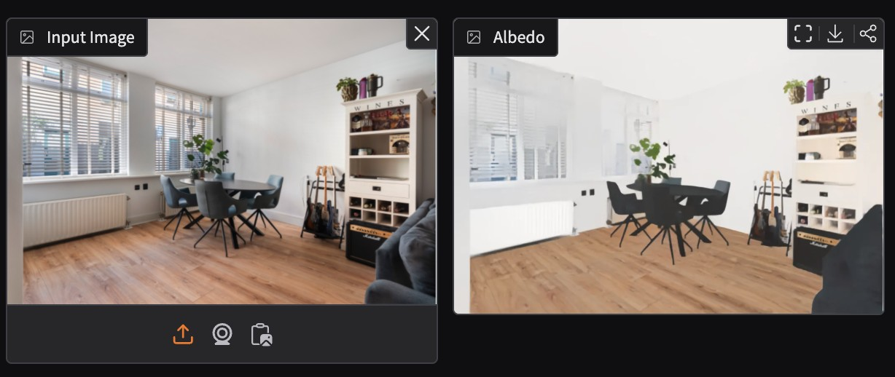
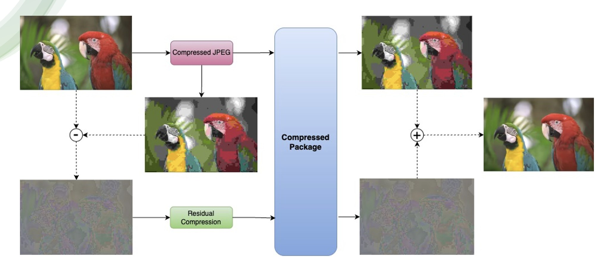
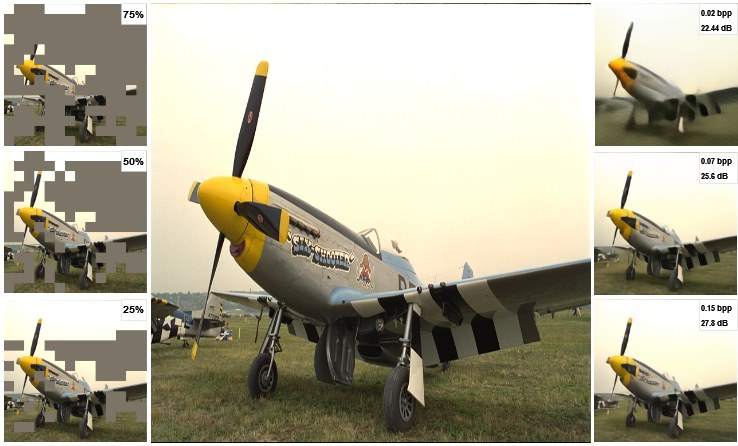

Research
My work sits at the intersection of computational colour, image physics, and deep learning. I am especially interested in problems where physical constraints can guide model training.

A physics-grounded training constraint that enforces illuminant-invariant albedo using unwhite-balanced image pairs — at zero additional inference cost.
Fine-tuning a vision-language IQA scorer to produce per-attribute quality estimates for professional camera benchmarking at scale.

A hybrid codec pairing a learned latent model with a traditional residual branch — combining rate-distortion efficiency with perceptual quality.

Injecting text semantics as a guidance signal into a MAE compression pipeline to steer reconstruction toward perceptually salient regions.